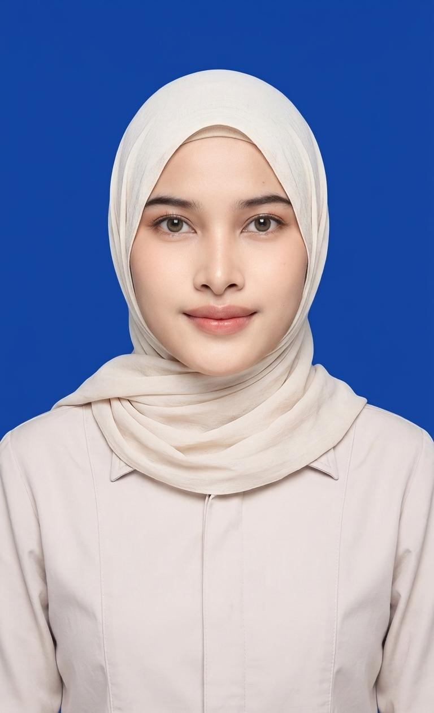

Mahasiswa Sistem Komputer Universitas Pamulang dengan IPK 3.88, berfokus pada teknologi, sistem kontrol, Arduino, dan pengembangan kemampuan profesional.

Saya merupakan mahasiswa aktif Sistem Komputer Universitas Pamulang yang memiliki kemampuan komunikasi, administrasi, kerja sama tim, dan problem solving yang baik. Saya aktif mengikuti kegiatan organisasi, mengembangkan kemampuan teknologi, serta mengerjakan berbagai proyek akademik berbasis Arduino, Sistem Kontrol, dan Simulasi IoT.
S1 Sistem Komputer
2024 - SekarangPendidikan Menengah
2019 - 2021Simulasi Open Loop dan Closed Loop menggunakan sensor LDR, resistor, dan LED.
Implementasi sensor cahaya untuk mengontrol LED otomatis.
Konfigurasi topologi jaringan dan simulasi komunikasi data.
Pembuatan program Arduino dan simulasi sistem kontrol sederhana.
Kombinasi kemampuan teknis dan soft skill yang mendukung kerja tim dan penyelesaian proyek.
Microsoft Office
Arduino IDE
Wokwi & Tinkercad
Problem Solving
Kalau ingin berdiskusi proyek, kerja sama, atau sekadar menyapa, silakan hubungi saya.